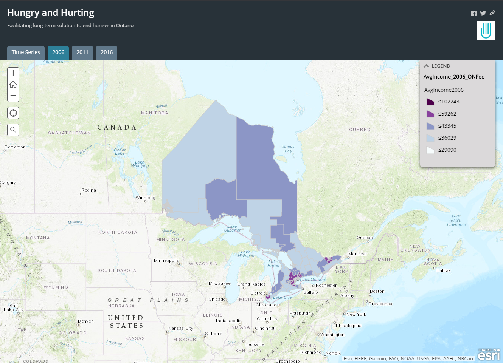
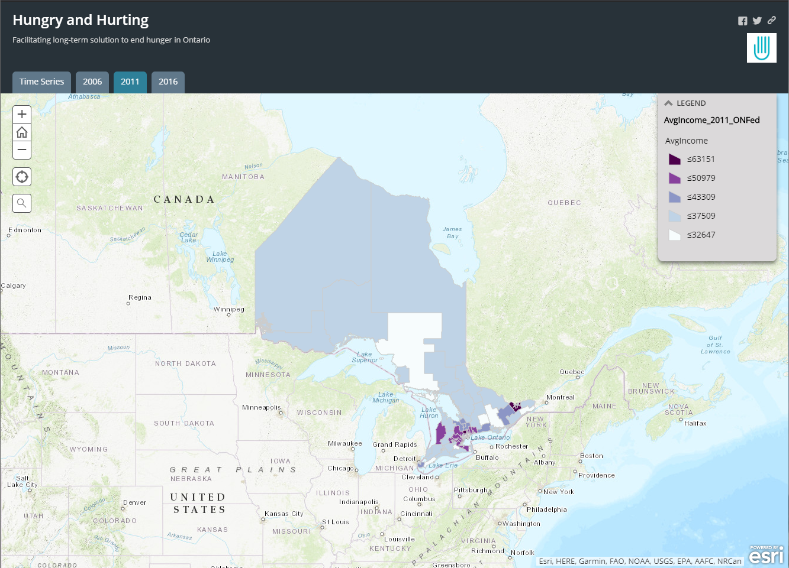
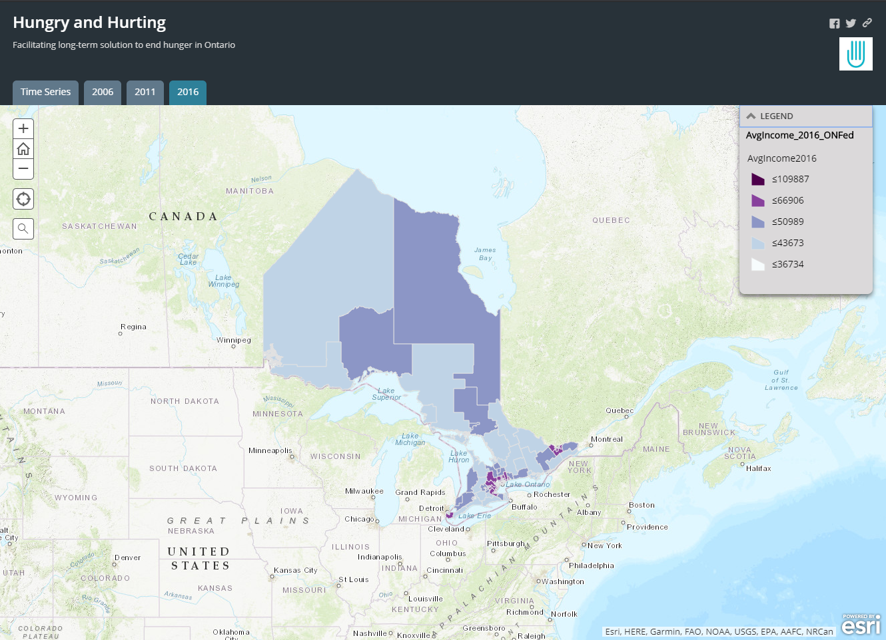

For current 2019-2020 Fleming GIS students and faculty you can access the time series web mapping application here
Otherwise please see screenshots of the working application below.
This screenshot demonstrates the time series goal we established to flash through each year of data (2006, 2011, and 2016)
These tabs allow the user to click through each year individually for further anaylsis and comprehension
  